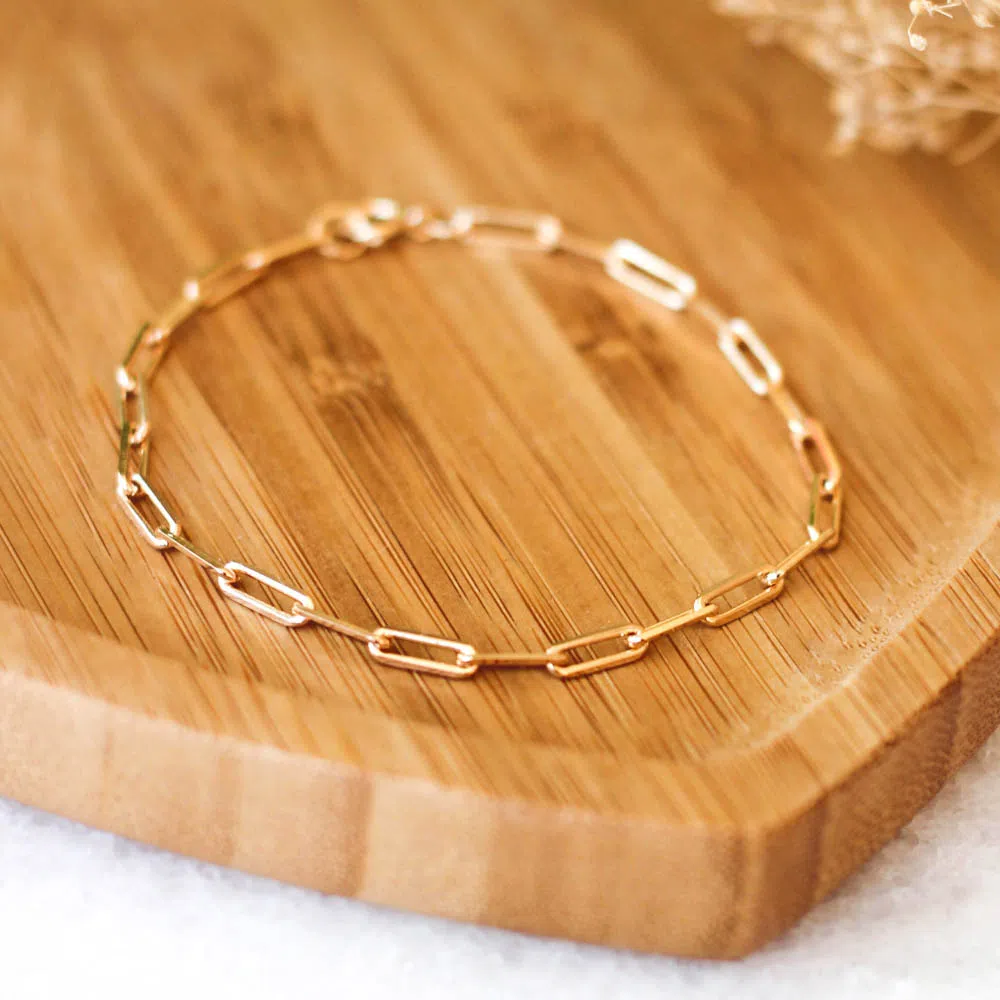
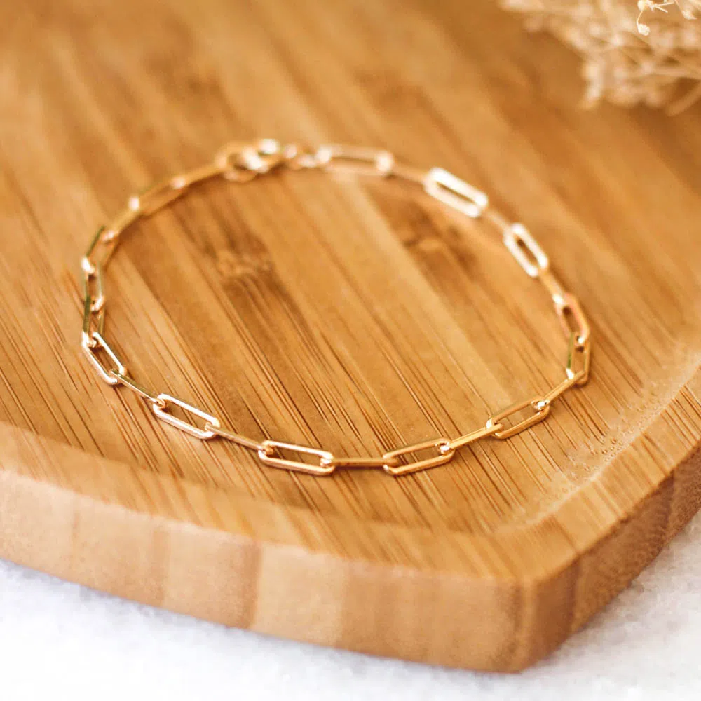

AQUI ESTÃO OS NOSSOS MODELOS DE PULSEIRAS!!
CASO SE INTERESSE POR ALGUM, ENTRE EM CONTATO CONOSCO!!
CASO SE INTERESSE POR ALGUM, ENTRE EM CONTATO CONOSCO!!

•Pulseira Riviera
É possível combinar a pulseira riviera com camisas, blazer, ternos clássicos e elegantes e até mesmo coletes,
te deixando com uma aparência bastante profissional, sem reduzir a elegância.
É possível combinar a pulseira riviera com camisas, blazer, ternos clássicos e elegantes e até mesmo coletes,
te deixando com uma aparência bastante profissional, sem reduzir a elegância.

•Pulseira de Pérola!
Graciosas, as joias combinam com looks casuais, como uma calça jeans e camisa básica, com looks despojados,
com estampas, e com roupas mais formais como vestidos de alfaiataria.
Graciosas, as joias combinam com looks casuais, como uma calça jeans e camisa básica, com looks despojados,
com estampas, e com roupas mais formais como vestidos de alfaiataria.
•Modelo de Prata
Ela harmoniza super bem com tons frios, exemplo: azul royal, púrpura, marsala e bordô,
é elegante e sofisticada, sendo perfeito para ocasiões formais
Ela harmoniza super bem com tons frios, exemplo: azul royal, púrpura, marsala e bordô,
é elegante e sofisticada, sendo perfeito para ocasiões formais
•Modelo de Ouro
Elas combinam muito bem com peças mais sofisticadas, esporte fino ou roupa de gala.
São ótimas para dar um toque de requinte.
Elas combinam muito bem com peças mais sofisticadas, esporte fino ou roupa de gala.
São ótimas para dar um toque de requinte.
•Super colorida!
•Pulseira de Trevos
•Pulseira lindas da Pandora
O acessório pode combinar perfeitamente com um vestido ou um look mais minimalista
O acessório pode combinar perfeitamente com um vestido ou um look mais minimalista
 

•Modelo elos
Elas combinam com camisetas, com malhas, além de vestidos diversos: minimalistas, florais, românticos, curtos, midi ou longos.
Elas combinam com camisetas, com malhas, além de vestidos diversos: minimalistas, florais, românticos, curtos, midi ou longos.